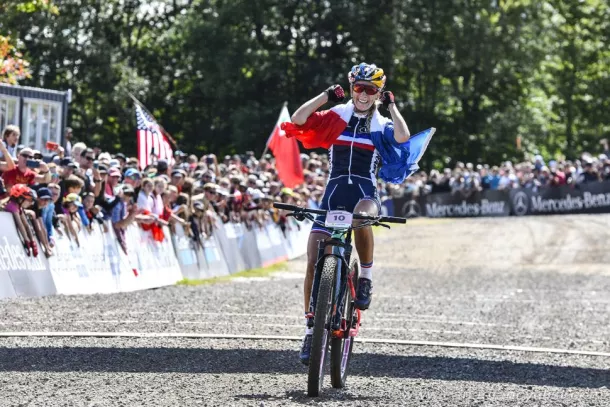
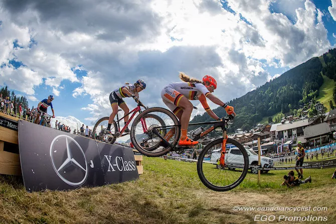

Latest on Cyclingnews- Mountain bike
 Pauline Ferrand Prevot wins Elite Women Ceoss Country title at Mountain Bike World ChampionshipsLachenr and McConnell complete podium. Pauline Ferrand-Prevot (France) became the first woman to successfully defend the Elite Women Cross Country title at the UCI Mountain Bike World Championships since her French compatriot Julie Bresset in 2012-13, with a dominating victory on Saturday in Leogang, Austria. Eva Lechner (Italy) outsprinted Rebecca McConnell (Australia) for second place. While the expected rain held off, the course was still extremely wet and muddy, making the uphills slow in the sticky mud and the downhills slick and treacherous, with almost every rider going down at some point. Ferrand Prevot rode away from the rest of the field on the start loop, never to be seen again. Besides her obvious strength on the climbs, Ferrand Prevot was riding the technical descents better than anyone, increasing her lead by as much as 30 seconds per lap, to beat Lechner and McConnell by a massive three minutes-plus. The real battle was for silver. McConnell took control of second place on the start loop and looked to have it wrapped up in the early laps, with a significant gap over Lechner, Sina Frei (Switzerland), and Yana Belomoina (Ukraine). Belomoina had a problem with her dropper post and had to have it replaced in the pits, eventually finishing seventh. The 2018 world champion, Kate Courtney (USA) also had mechanical issues, eventually dropping out.
MTB World Cup shrinks as Les Gets Lenzerheiden cancelled
September rounds were due to take place during Tour de France
Elisabeth Brandau and Kate Courtney at the Les Gets World Cup in 2019 (Image credit: Rob Jones)
The COVID-19 pandemic continued to chip away at the remainder of the 2020 Mercedes-Benz UCI Mountain Bike World Cup, with the Lenzerheide, Switzerland and Les Gets, France rounds scheduled for September cancelled by the organisers, the UCI announced on Tuesday. The only cross country race left on the calendar is the double round in Nové Město in the Czech Republic from September 29-October 4, while downhill has two: Maribor, Slovenia and Lousã, Portugal in October before the planned UCI Mountain Bike World Championships in Leogang, Austria from October 5-11. The coronavirus pandemic has led to mass cancellations of cycling events across all disciplines, with a shortened road season beginning in late July. However, travel restrictions set in place by some countries are hampering athletes from getting to some races. Val di Sole Mountain Bike World Cup cancelled due to coronavirus restrictions 2020 Mountain Bike Worlds in Albstadt cancelled due to coronavirus pandemic 2020 Mountain Bike Cross-Country World Championships moved to Leogang in October The upcoming Sibiu Cycling Tour in Romania, a UCI 2.1-ranked stage race, announced that the Memil Pro Cycling team from Sweden had to cancel its participation for this reason. Many riders from the United States have been prohibited from travelling to Europe to race unless they had secured long-term stay visas or residency in a European country before the pandemic. The UCI also announced an unprecedented number of World Championship cancellations: the 2020 UCI Masters Mountain Bike World Championships in Pra Loup, France, 2020 UCI Mountain Bike Four-cross World Championships in Val di Sole, Italy, the BMX World Championships, which had been scheduled to take place in Houston, Texas, the UCI Gran Fondo World Championships in Vancouver, Canada, the UCI Junior Track Cycling World Championships, which were due to be held in Cairo, Egypt on 16-21 August are all off for this year.